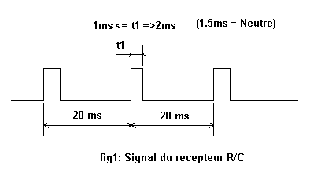
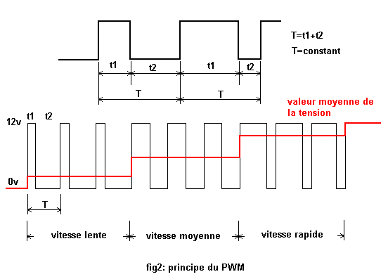
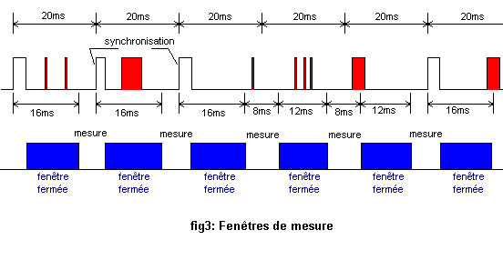
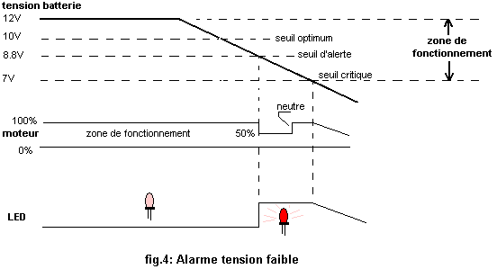

Variateur de vitesse PWM (PIC16F876)
Variateur de vitesse pour moteur à courant continu commandé en PWM, pour application de radiocommande.

Caractéristiques
- Tension d'alimentation : nominal 12V (plage d'utilisation possible entre 7V et 18V max).
- Courant consommé par le montage : < 17 mA.
- Courant moteur avec MOSFET IRFZ24N et IRF9Z24N : 12 A (ou plus suivant modèle de transistors), valeur suffisante pour des « petits » moteurs de modèles réduits.
- Commande d'un pont en H, constitué de transistors MOSFET de puissance commandés en PWM à 43.2 kHz.
- Dimension du CI : 75 x 50 mm.
- Poids : 65 g.
Fonctionnalités
- Variateur de vitesse pour moteur à courant continu avec inverseur du sens de rotation et commande en PWM à 43.2 kHz.
- Frein moteur autour du neutre.
- Filtrage logiciel des impulsions parasites non comprises entre 0.8 ms et 2.2 ms ou hors fenêtre de mesure.
- Paramétrage par l'utilisateur de quatre points de fonctionnement (min – neutre min – neutre max – max), la zone de neutre étant située entre neutre min et neutre max. Points de fonctionnement sauvegardés en mémoire EEPROM.
- Détection tension d'alimentation faible. Un seuil d'alerte fixé à 8.8V est signalé par une LED et temporairement par une tension d'alimentation à 50% du moteur ; un passage par le neutre permet de revenir à un mode de fonctionnement normal.
- Commande du moteur après passage au neutre : pas de démarrage à pleine vitesse.
- Coupure du moteur si absence de signal reçu (panne récepteur ou émetteur, brouillages...) pendant 500 ms ; le signal de sortie (TEST) passe alors au niveau 1 — signal utilisable avec un système de sauvegarde et de localisation (buzzer < 20 mA) de modèle réduit.
- Option présentée : alimentation du récepteur et des servomoteurs intégrée au montage.
Principes
Le récepteur envoie au variateur des impulsions d'une durée comprise entre 1 ms et 2 ms toutes les 20 ms ; le neutre correspond généralement à une impulsion d'une durée de 1.5 ms (fig. 1).

La commande du moteur est réalisée en PWM (Pulse Width Modulation), impulsion modulée en durée. La fréquence est fixe (43.2 kHz), le rapport cyclique est variable, ainsi la tension moyenne appliquée au moteur est variable également. Un rapport cyclique de 50% correspond à une vitesse (tension) moyenne du moteur ; un rapport cyclique qui tend vers 1 équivaut à une vitesse maximale du moteur (fig. 2). Le nombre de pas du rapport cyclique est fixé à 256.

Un filtre logiciel antiparasites rejette toutes les impulsions (en rouge, fig. 3) non comprises entre 0.8 ms et 2.2 ms, ainsi que celles qui surviennent en dehors d'une fenêtre de mesure. Cette fenêtre s'ouvre pendant 8 ms et se ferme pendant 16 ms. Chaque « bonne » impulsion synchronise la fermeture de la fenêtre. En absence de signal, la fenêtre de mesure se ferme 12 ms et s'ouvre 8 ms. Si aucune impulsion ne parvient au variateur pendant l'ouverture de la fenêtre au cours des 500 ms qui suivent, il faudra alors attendre 20 impulsions au « neutre » consécutives pour synchroniser la fenêtre.

Alarme tension faible : le variateur mesure la tension de la batterie moteur (et récepteur si le régulateur 5V est câblé) et signale par une LED que le seuil d'alerte (8.8V) est atteint. S'il est commandé, le moteur passe en 1/2 puissance et revient à un état normal quand le manche de la radio est amené au neutre un court instant — 10V étant le seuil optimum pour commander la gate des transistors MOSFET. Le seuil critique dépend du type de régulateur 5V utilisé. Le seuil d'alerte est modifiable par le changement des valeurs des résistances constituant le diviseur de tension.
